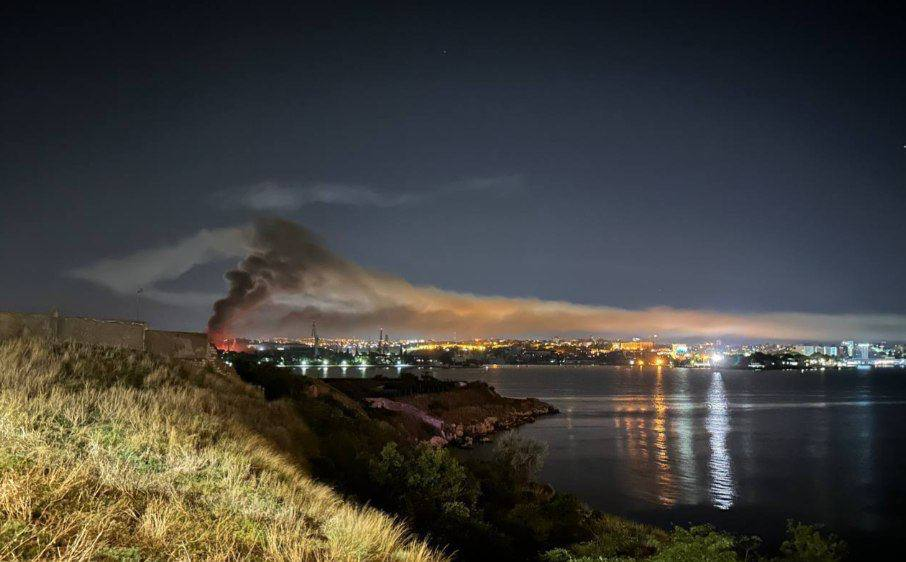
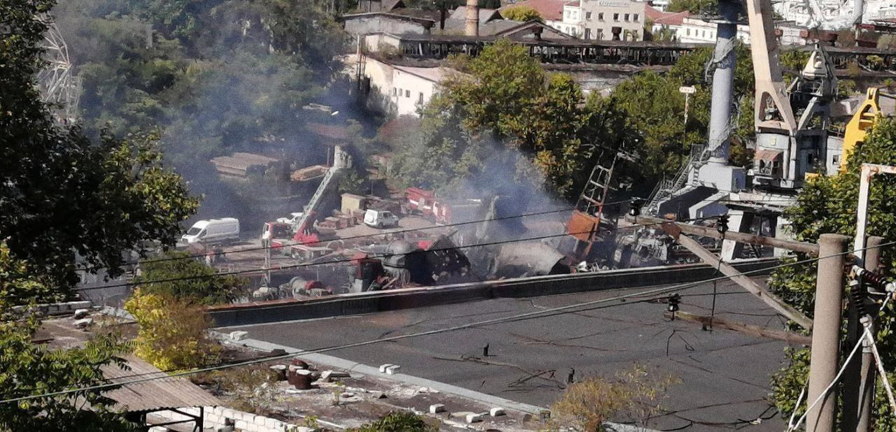
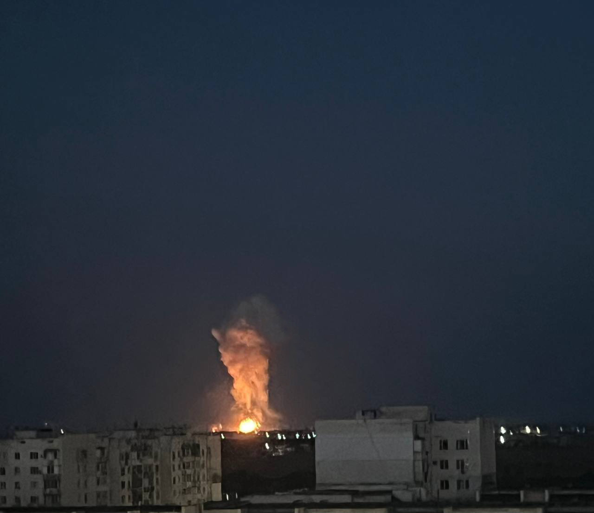

Майже щоночі ворожі безпілотники вирушають на полювання в український повітряний простір, щоб знищити чи пошкодити якісь інфраструктурні або військові об’єкти. Або просто когось убити та залякати. Нерідко за компанію з ними летять ракети, запущені з літаків десь над Каспієм чи з кораблів у Чорному морі. Бувають й інші варіанти: ракети з Курська чи Білгорода. Варіантів безліч, адже кордон протяжністю в тисячі кілометрів дає змогу втілювати які завгодно смертельні комбінації.
Атака на територію Севастопольського морського заводу імені Орджонікідзе / 13.09.2023
13 вересня цього року, через багато місяців з початку повномасштабної війни, майже щоночі українські безпілотники вирушають на полювання у ворожий повітряний чи морський простір, щоб знищити або пошкодити ворожі інфраструктурні та військові об’єкти. Нерідко за компанію з ними летять ракети, надані іноземними партнерами. Щоправда, лише в бік окупованого Криму. У бік Москви безпілотники, начинені вибухівкою, супроводжує лише українська злість. Хоча й цього переважно достатньо, адже наші безпілотники щодня стають досконалішими, учаться оминати вороже ППО, РЕБ, коли треба, ставати невидимими й досягати визначених цілей. Ще рік тому ані недоцар Путін у своїй хворій голові, ані більшість його холопів навіть уявити не могли, що українські безпілотники палитимуть Москву.
Проте сьогодні це реальність. Саме неможливість адекватно відповідати агресору на його дії, відсутність паритету в протистоянні та небажання із цим миритися й спонукали українців до творчості. І це типово для українських вояків.
Операцію вночі 13 вересня 2023 року, під час якої атакували територію Севастопольського морського заводу імені Орджонікідзе та уразили щонайменше два російські кораблі, аналітики вже назвали унікальною та першою в історії. Унікальною, бо, не маючи змоги боротися традиційними способами з підводними човнами, які росіяни використовують як платформу для запуску своїх ракет з басейну Чорного моря, наші військові вирішили знищити одну із субмаринзнищити одну із субмарин тієї миті, коли вона перебувала на ремонті. Можливо, її просто загнали планово підфарбувати, адже субмарина майже свіжа — 2014 року випуску. Проте така її доля, і цим неможливо було не скористатися.
"Через влучання ракет на севастопольський судноремонтний завод ім. С. Орджонікідзе було пошкоджено два кораблі які були на ремонті" / 13.09.2023 /
Знищений підводний човен клятої русні
Прильоти по ППО т.о. Криму / 14.09.2023 /
Вночі 14 вересня, поки в Південній бухті Севастополя ще диміли рештки ВДК «Мінськ», трохи північніше, біля Євпаторії, українські Сили оборони знову провели унікальну операцію. Військова контррозвідка СБУ та ВМС України знищили російський комплекс ППО «Тріумф» вартістю $1,2 млрд. Спочатку безпілотники СБУ уразили «очі» комплексу — радари й антени. А після виведення з ладу радіолокаційних станцій підрозділи ВМС двома крилатими ракетами «Нептун» (тими самими, що потопили «Москву») ударили по пускових комплексах С-300/400 «Тріумф».
Момент ураження ППО москалів / 14.09.2023 /